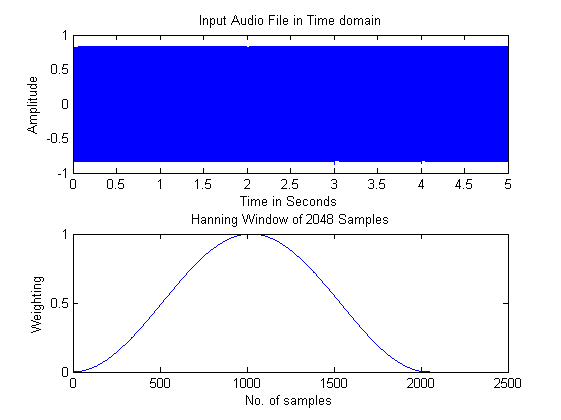

clc;
clear all;
close all;
[y,Fs] = wavread('57.wav');
m = 2048;
o = 512;
n = m-o;
w = hanning(m);
left = y(:,1);
time = (1/Fs)*length(left);
t = linspace(0,time,length(left));
subplot(2,1,1);
plot(t,left);
xlabel('Time in Seconds');
ylabel('Amplitude');
title('Input Audio File in Time domain');
subplot(2,1,2);
plot([1:m],w);
xlabel('No. of samples');
ylabel('Weighting');
title(['Hanning Window of ' num2str(m) ' Samples']);
al = length(left)-m;
pad1 = mod(al,n);
k = ceil(al/n) + 1;
left = padarray(left,[pad1+m 0],0,'post');
nUniquePts = ceil((m+1)/2);
freqArray = (0:nUniquePts-1)*(Fs/m);
s1 = 1;
i = 1;
while i <= k
frame = left(s1:(s1+m-1));
wframe = frame.*w;
fl = length(frame);
p = fft(wframe);
p = p(1:nUniquePts);
p = abs(p);
p = p/fl;
p = p.^2;
if rem(fl, 2)
p(2:end) = p(2:end)*2;
else
p(2:end-1) = p(2:end-1)*2;
end
[max_value, index] = max(p(:));
notearray(i) = freqArray(index);
i = i+1;
s1 = s1+n-1;
end
figure(2);
plot(notearray);
xlabel('Frame number');
ylabel('Frequency');
